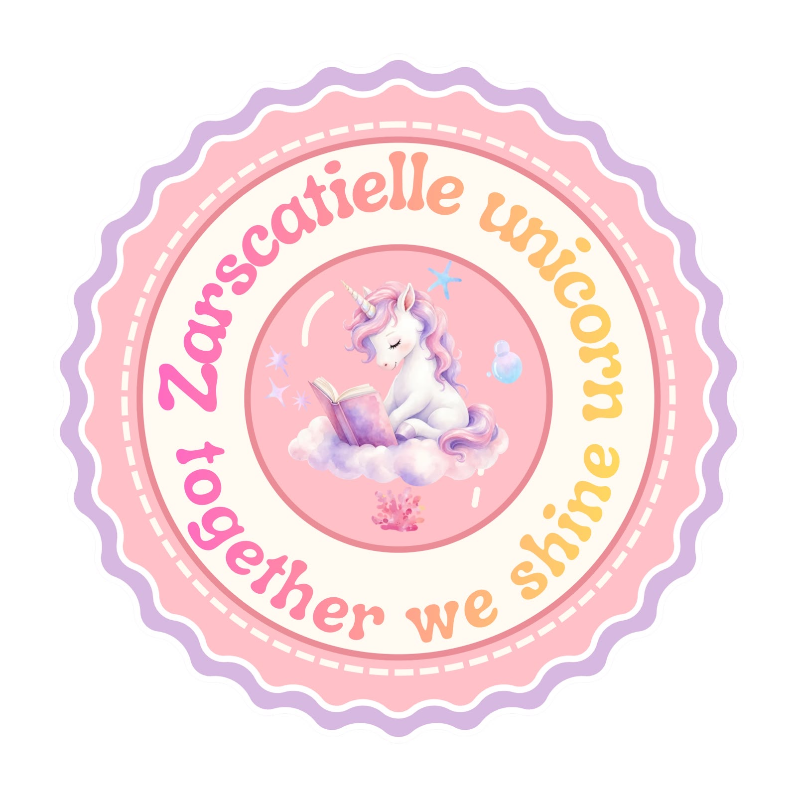

Warna pink dan ungu menggambarkan kelompok yang harmonis, kreatif, dan saling melengkapi untuk mencapai tujuan bersama. Unicorn melambangkan keunikan dan harapan untuk terus berkembang bersama. Posisi unicorn yang duduk di atas awan menggambarkan impian yang tinggi, buku melambangkan semangat belajar, sedangkan mata terpejam mencerminkan ketenangan. Perpaduan warna pink dan ungu juga menunjukkan keharmonisan, kreativitas, serta kebersamaan dalam menghargai perbedaan. Empat elemen yang mengelilingi unicorn melambangkan empat anggota kelompok dengan karakter yang berbeda, tetapi saling mendukung dan melengkapi. Bintang menggambarkan harapan, ambisi, dan semangat untuk bersinar. Gelembung melambangkan kebebasan, keceriaan, dan energi positif. Bunga mencerminkan kelembutan, pertumbuhan, dan kepedulian dalam menjaga keharmonisan. Sementara itu, bintang laut melambangkan kemampuan beradaptasi, ketangguhan, dan kekuatan dalam menghadapi tantangan. Keseluruhan elemen ini menggambarkan kelompok yang kompak, saling menghargai, dan tumbuh bersama untuk mencapai tujuan.